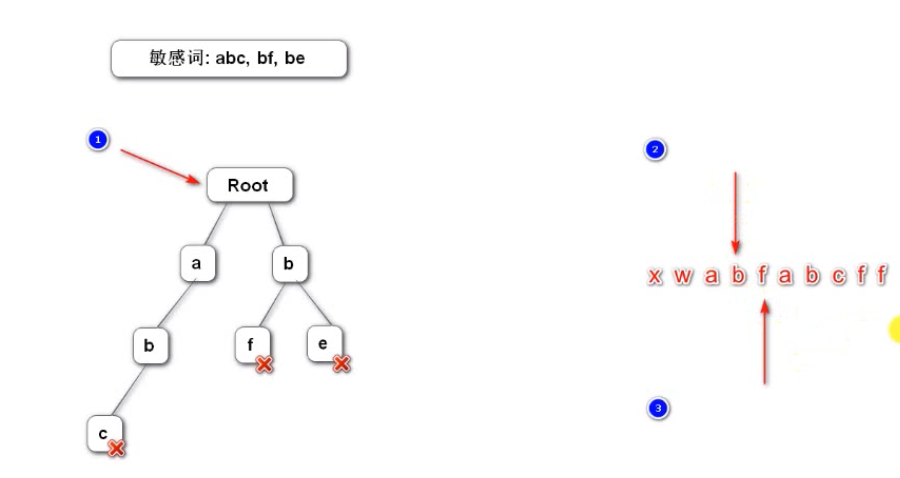

前言
本篇文章讲解了如何使用前缀树来对文本进行敏感词过滤
前缀树
概述
名称：Trie、字典树、查找树
特点：效率高、消耗内存大（空间换时间）
应用：字符串检索、词频统计、字符串排序等
Trie的核心思想是空间换时间。利用字符串的公共前缀来降低查询时间的开销以达到提高效率的目的。
它有3个基本性质：
1 根节点不包含字符，除根节点外每一个节点都只包含一个字符。
2 从根节点到某一节点，路径上经过的字符连接起来，为该节点对应的字符串。
3 每个节点的所有子节点包含的字符都不相同。
敏感词过滤器
先把所有敏感词构造一个前缀树

- 构造敏感词过滤器需要三个指针，一个指向根节点 ，另外两个指向敏感词的开头和结尾，用来替换
- 节点是以字符为单位的，所以各种语言都可以用
定义前缀树
1
2
3
4
5
6
7
8
9
10
11
12
13
14
15
16
17
18
19
20
21
22
23
24
25
26
27
28
29
30
31
32
33
34
35/**
* 定义前缀树
* 这个类描述的是一个节点
* 这个结构只在这里用，所以可以用内部类
*/
private class TrieNode {
//关键词结束标识
private boolean isKeyWordEnd = false;
//子节点(key是子字符，value是子节点）
private Map<Character,TrieNode> subNodes = new HashMap<>();
public boolean isKeyWordEnd() {
return isKeyWordEnd;
}
public void setKeyWoedEnd(boolean keyWoedEnd) {
isKeyWordEnd = keyWoedEnd;
}
//添加子节点方法
public void addSubNode(Character c, TrieNode node) {
subNodes.put(c, node);
}
//获取子节点
public TrieNode getSubNode(Character c) {
return subNodes.get(c);
}
}
}
类加载器
Java中所有的类都是通过加载器加载到虚拟机中的。
类加载器之间存在父子关系，不同的子加载的类型之间是无法访问的（虽然它们都被放在方法区中）this.getClass().getClassLoader().getResourceAsStream(name)
是通过当前类的加载器来加载资源，也就是保证是和类类型同一个加载器加载的。
初始化前缀树
1 | //注解表示这是初始化方法 |
把敏感词添加到前缀树
1 | */*** |
敏感词过滤
1 | */*** |
- 判断字符是否为特殊符号
1
2
3
4
5
6
7
8*/***
* *判断字符是否为特殊符号*
* */*
private boolean isSymbol(Character c) {
//isAsciiAlphanumeric()是判断是不是合法字符
//不是合法字符并且不是东亚文字
return !CharUtils.*isAsciiAlphanumeric*(c) && (c < 0X2E80 || c > 0x9FFF );
}